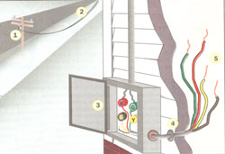
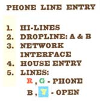
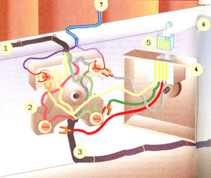
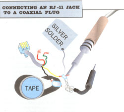

Pipe music, rig an intercom, or connect other electronic devices over existing phone lines.
As long as a half-century ago MaBell anticipated today's Information Age, and when she self-destructed into seven regional "Baby Bells" in the early '80s, she bequeathed you house wiring that can handle at least twice as much elec tronic information as you'd expect it to.
Today's digital phone transmission systems have confused things with their satellites, microwaves, and optical fibers that can handle a thousand phone calls at once. But back in the analog Dark Ages (a little more than a decade ago), all phone messages traveled from caller to caller-around the globe and back if need be-over a parallel pair of copper wires. Inside your home and throughout most rural and small-town phone systems, they still do.
The signal travels from the telephone pole hi-lines to your home via a heavy, weatherproof, guyed cable called a "drop line." Inside the cable are two wires, termed Lines A and B (or four wires the added pair called C and D-if you have two separate numbers), which lead down the house wall to a small grey box called the "network interface." Inside, the phone lines are stripped to bare copper and bound to brass wiring posts. There, they connect to your permanent, fixed house wiring, called station wire. This is a miniature cable-a sheath of white or grey plastic insulation holding four top-quality, 24- gauge, well insulated, solid copper wires.
But, most home phone systems use only two of the four wires-normally the green and red pair. Unless you have two different phone numbers or an especially wired feature-phone network, the black and yellow wires are unused-just languishing inside the station wire that's tacked with special little U-shaped staples around your baseboards and over the door frames to all your phone locations past and present-and perhaps out to a barn phone-thanks to MaBell's foresight.
That unused wire-pair offers a potential electronic link between every room that is now, ever has been, or ever will be wired for a telephone: living room to kitchen; kitchen upstairs to the bedroom or hall phone; your daughter's room to the rec room in the cellar; kitchen to barn or workshop ...anywhere or everywhere the phone lines run. In some older homes you'll find abandoned, but still perfectly good phone wiring painted into the woodwork and running through the walls and along the cellar-ceiling beams to nearly every room in the house. In newer homes you may want to extend the network yourself. It's easy.
You can tap in anywhere along the line and use the black/yellow wire-pair to hardwire a home security system ...a room-to-room intercom ...a closed-circuit-TV system to view the front door or sleeping baby, or the garden so you can nail that marauding raccoon or groundhog. Use it to rig an audio monitor for the kids' room or between family room and your study ...to hook up alerts or warnings for invalids ...to run music (mono only) around the house ...carry a VCR rabbit signal from cable or Sat-TV box to a remote monitor ...let kids send Morse Code ...or any other low-power electrical or electronic circuit.
The Home PhoneNetwork
Before you access the hidden wires in your phone lines, be sure they are not connected to the Phone Co. Otherwise, you could find that you are transmitting private intercom conversations or your secret stash of Lenny Bruce tapes all around town. This could be embarrassing for you and inconvenient for the neighbors. It would also be a serious violation of TelCo tariffs (utility company regulations carrying the force of law) and federal telecommunications law.
In any detached house where new service has been installed since the early'80s, it's easy to locate the network interface-a small, gray, plastic box with a phone company tag, logo, or name molded in. It is normally located on the outside wall of the house under the drop line leading from the telephone pole, or in a utility closet or cellar outlet box where underground cables emerge.
The waterproof door of the interface box opens with a screwdriver or small hex-socket wrench. Inside you'll find that the big drop line terminates, and is stripped of insulation to reveal a pair of thick, black, insulated copper wires called A and B in the trade. The bare ends of these wires poke through two discreet screw-terminals. Also attached to the terminals will be a pair of smaller wires, one covered in red insulation and the other in green. They will run into a sheath of grey or ivory insulation-the station wire-which will exit the box and run through the wall and into the house.
You may or may not see the black and yellow pair that is also contained in the station wire sheath. Some wiremen cut them off. Or, they may be stripped out of the station wire sheath along with the R/G pair, but rather than being attached to terminal posts may be coiled up out of the way in the interface box. If this is the case, be sure the bare copper ends are not touching one another or any other piece of metal; it is best to secure the ends with plastic insulating electrician's tape.) Most likely, the Y/B pair will be attached to the second pair of screw terminals inside the interface box-even though there are no live phone lines coming in from the pole to attach them to. In all these situations, you can be sure that the Y/B pair is not connected to the phone net. (You will also find the Y/B pair hooked up to wiring blocks and modular jacks serving phones all through the house-readywiring your secret circuit for you-a service of dear, departed MaBell.)
If there is a second pair of wires (Lines C and D) coming out of the drop line or connecting to a second pair of terminals in the interface box-to which the Y/B pair is also connected-you are prerigged for two phone numbers. Follow the next procedure to see if the second number is hooked up to the hi-lines out at the telephone pole. It is remotely possible that the Y/B pair is connected to the phone net whether you know it or not and whether or not you are being billed for a second number.
Locating the Primary
If possible, follow the station wire from the interface through the house wall, along cellar beams, and through floor or wall to the primary telephone outlet. In apartments, locate the emerging wire in a utility closet if you can. In some buildings you won't be able to find it till it emerges from the wall or floor at your primary phone location.
In older homes, the line may be routed between cellar-floor beams, through closets and walls via antique ceramic insulators and terminal blocks (which look like they came out of a mad-scientist movie), and along sets of parallel wires covered with dusty, old, black, woven fabric and cracked rubber insulation that may be more than 100 years old, but will still carry the phone current.
Eventually, the line will arrive at a telephone or a vacant wiring block. This is your primary phone (All other telephones beyond this outlet are technically extensions.). Remove the flat face plate covering a wall outlet or the box-cover of externally mounted wall jacks to expose plastic wiring blocks.
All wiring blocks will contain four separate wiring posts, brass screws with a pair of little brass washers that screw into individual brass plugs molded into the plastic.
The wiring posts look to be awfully close together, especially if you are new to electronic wiring. This proximity can cause problems. If the R and G posts ever were to be connected inside the wiring block, the circuit would close and TelCo line-signal current coming out from the main battery would turn around and flow right back in a fruitless "short circuit"-without passing through the telephone. The phone would go dead and callers would hear a continual busy signal. However, no matter how tiny the posts and how small the wiring blocks, the posts are completely insulated from one another by the nonconductive plastic formed around and separating them.
WARNING: NEVER LET WIRES OF TWO COLORS COME INTO CONTACT Any time you go into the phone wiring, take special care not to let so much as one tiny strand of wire make a permanent connection between one color wiring post and another. It is especially easy to create such an inadvertent short circuit if you are using multistrand wire, so all station wire and hookup wire going into a wiring block is solid ...or it should be. Multistrand wire flexes better than solid, so is used in instrument-to-wiring block cords, in handset cords and in the wires of many accessories you may want to connect via the phone lines. If you ever find it necessary to attach multistrand wire to a wiring block, it is highly advisable to solidify it. Strip enough wire to wrap around the wiring-post terminal screw (but no more-a half-inch at most). Twist tight, heat with a soldering iron and "tin" into a solid core by melting high-quality electronics solder and letting it flow into the wire and harden. Snip off any errant strands that weren't captured in the soldered core using side-cutting pliers or a sharp knife.
Wiring Blocks
The most common wiring blocks are little square half-cubes that are screwed to the baseboard. They are covered by a plastic or metal open-box-shaped cover held on with a single screw through the center that removes with a screwdriver. Old-style nonmodular phones will be hardwired to the wiring block-the two wires (or three in European-style phones) inside the cord leading from the phone are stripped at the ends and the wire wrapped around the same brass screws that hold the R/G station wire pair. (If the old wiring blocks and the station wire running through them are painted into the woodwork, removal can be a chore. You'll have to chip off paint on top to get at the screw holding the cover on, and often have to chip paint off around the base of the cover where it fits against the baseboard to free it up.)
Modern modular phones are not hardwired but are removable, and connected to the wiring block via a little clear-plastic RJ-11 plug that contains four small brass pinconnectors. These connectors in the plug mate with four brass pins inside the socket that is molded into the modular jack on the wall. The electrical connection between the two sets of pins is maintained by pressure from the little plastic spring tab molded into the top of the plug that exerts a constant pressure when the plug snaps into place inside the jack-socket. (This system is a marvel of simplicity and longevity, and the result of many years of testing by MaBell in its later years. I have never known an RJ-11 plug to fail or an ATT-made socket to malfunction unless sorely abused. This cannot be said of some cheap imitations sold in mall stores.)
At the back of the socket, four wires color-coded B,R,G, and Y lead out from the pins and terminate in spade lugs (Ushaped thin/flat-brass connectors that slip in between the washers under the screws in the wiring block). The stripped ends of the incoming and outgoing station wire (one coming from the pole via the interface and another leading away to extensions) are formed by the installing wireman into small loops that are slipped between the washers on the appropriate screw terminal along with all other wires of the same color-code.
NOTE: All wiring blocks will have the letters R, G, B, and Y molded into the plastic housing beside the brass wiring terminals. It really doesn't matter which post holds which color. It is easiest to follow the molded-in codes, and be sure that all the red-coded wires go on the R post, all the yellow wires on the Y post and so on.
With a screwdriver, loosen the brass screws in all four wiring posts. Slip out the spade lugs at the ends of the four colorcoded wires coming out of the modular jack.
The phone should go dead when you remove the R/G pair. Temporarily fasten the spade lugs at the ends of the red and green wires coming from the modular jack connected to the phone to the yellow and black posts on the wiring block. It doesn't matter which wire goes on which post.
You should hear nothing.
If you are not paying for a second phone number but get a normal hum, the Y/B pair is improperly connected to the Te1Co circuit. Call a friend or the phone company repair line for a call back at your regular number. If you get a ring, that means the Y/B and R/G lines are connected somewhere between the primary jack and the pole-probably a mistake by an amateur wireman before you. Go back to the interface and disconnect the B/Y station wires from the wiring posts in the interface box. Coil them out of the way. Be sure the stripped, bare wires do not touch each other or any metal part. It is best to tape the ends.
You may have a short in a wiring block or a staple or two missunk in an amateur attempt to fasten the station wire to the woodwork. Overhaul the whole house circuit, find the misconnection if you can and fix it. (Remember: all wires of the same color must be wired to the same posts inside each wiring block, and there must he no errant strands of wire or other conductive material bridging posts or wires.)
It is extremely rare, but if you can call out okay, but get no ring-back at your regular phone number, your Y/B line is miswired at the pole. Unfortunately, the phone company is going to have to sort this one out for you.
Chances are about 99 percent that you'll hear nothing, confirming that the Y/B wires are unconnected and open for use in a secret circuit. Reinstall all four spade lugs from your primary phone to their proper terminals, get a call back to be sure that the primary calls out and will re ceive incoming calls, and replace the cover on the wiring block.
THANKS TO MABELLYou already have an intercom nearly installed.
Now that you understand how the system is wired (not all that complicated, is it?) and have made sure that you won't be transmitting signals you don't intend to beyond the home circuits, the fun can begin.
The Secret Circuit
Anywhere in the house that a phone line runs you have a twin-line electronic interconnect. If you want to extend the secret circuit (and/or extend your existing phone line):
1. Buy some station wire-four-wire phone cable that comes in 50- and 100-foot rolls or bulk for less than 15 cents/foot from a mall store phone department or from Radio Shack-and modular wall jacks for $2 and change apiece.
2. To fasten all four wires at one end of the station wire to any active wiring block, first remove wiring block cover (modular jack).
3. Strip wire ends by cutting shallowly with a very sharp knife (or using a phoneline stripper or stripper/crimping tool) to
a. remove 1 1/2-inches of cable sheath to reveal wires;
b. remove 1/2-inch of insulation from each color-coded wire.
4. Form wires into clockwise open circles using needle-nosed pliers and slip each under the brass screw in the propercolor post.
5. Tighten till snug; the clockwise motion of the screwhead will draw wire ends in toward the threads of the screw (If you bend wire into counter-clockwise half circles, tightening it down will tend to push ends out ...and they are sure to want to contact another wiring post and short out the phone circuit.). Replace wiring block cover.
6. Feed out the cable along your baseboard, over doors and along moldings going up stairs to new phone locations, fastening every foot or two with a special phone line stapler or hammer-on staples. A phone line stapler is available on special order for about $20 from any hardware store; it fits snugly over the station wire and applies a specially designed staple precisely so as not to pierce the sheath. Never try to fasten phone cable with a conventional staple gun, as you are bound to pierce the cable, shorting wires and the circuit.
7. Attach a new wiring block to the baseboard; strip and attach the color-coded wires to the wiring posts and attach a modular jack. A phone will connect and you have a new location for the secret circuit as well.
Accessing the Secret Circuit
It is easiest and most secure to hardwire your stereo and extension speaker, intercom, or whatever to the system.
1. Remove wiring block covers at the transmitter (stereo amp, main intercom or CCTV camera) and at the output (speaker or monitor) locations.
2. Fasten hookup wire between the + and - output posts of the transmitter and the Y/B posts on the block, being sure to remember each color wire's polarity.
3. Repeat at the output block by wiring the output device the same way...+ to + and - to -.
4. Test, refasten wiring block covers, and enjoy.
Modular Hookups
More flexible is to hook your gadgetry to modular plugs so instruments can be plugged in and unplugged at will. There are two ways: 1.) hook transmitter and output device to slave modular jacks and run extensions (four-lead phone cord with RJ-11 plugs at both ends) to the phone line; or 2.) solder the transmitter and output wire directly to a length of phone line with an RJ-11 plug at the end, and run that to plug into the nearest modular jack on the phone line.
Modular Jack to Modular Jack
Get as many wall jacks and four-line phone line extension cords (RJ-11 is at both ends) as long as needed to reach from each transmitter and output to the nearest modular jack in the phone wiring/secret circuit. As above, use short lengths of hookup wire to connect transmitters and output devices to the Y/B posts in the slave jacks. (I find it most convenient to fasten these jacks to the back of the stereo or to the wall just below an intercom.) Connect four-wire extension phone line between the slave jacks and any wall jack; Y/B pair will connect to Y/B pair and you are in business.
Modular Plug to Modular Jack.
Instead of hooking a stereo's + and posts to a slave jack, and running phone line extension cord with RJ-11 plugs at each end to another jack in the phone circuit, you can skip the slave jacks and attach the stereo leads to the stripped end of a length of phone wire with an RJ-11 at the far end. Then, you just plug the RJ-11 directly into the phone circuit.
Carefully split down the middle, peel back, and cut off an inch of plastic sheath from a phone line extension that is long enough to reach from instrument to the nearest phone jack, and that has an RJ-11 jack at the far end. Four tiny color-coded wires can be peeled out of the insulating sheath. A half-inch from the ends of the Y/B pair of wires, very carefully cut around the insulation with a sharp Exactotype craft knife. The multistrand wire inside is very tender, so cut slow, shallow, and with care, stopping when you feel the blade begin to scratch the wire inside. Slip off the insulation. If you take more than one or two stands of wire with it, make new cuts till when you remove the insulation, most of the wire strand is intact and exposed.
Strip an inch of insulation from the ends of the + and - hookup wires connected to the transmitter's output lugs and the output's input lugs. Wrap the springy multistrand phonecord wire around the solid hookup wire as best you can.
The best connection is to solder the two together and insulate with heatshrink tubing or electrician's tape. If you don't have an ongoing need for a soldering iron and silver electronics solder, there is no need to buy them. Radio Shack sells lowtemp foil-solder-you wrap it around the joint and melt it with a match or cigarette lighter. Less effective but cheaper still is to wrap the joint tightly with a length of extra wire of either type and tape it tightly.
Once the connection is made, just plug the RJ-11 is into the phone circuit and transmit away.
IT WILL ALL WORK IF...you remember to keep each color wire's polarity and its connections consistent throughout.
Dual lacks
To have both a phone and your secret-circuit application installed at the same wiring block, replace the singlesocket jack with a multiplier. You can wire in an all new dual-socket jack or plug a multiple-jack adapter into the original. You can get adapters now that convert a single modular jack into five; use one for the phone, another for the modem, a third for an answering machine over the R/G wire pair, and still have two left over to run music and an intercom system over the secret circuit on the Y/B pair.
Plugs and Coax
If the gadgetry hooked up to your secret circuit does not feed in and out via screw terminals but uses plugs, hookup is more complicated. Some plugs lead into a pair of conventional multistrand wires ...but there will be four wires if it is a stereo unit.
As with the phone, it does not matter which lead goes on which of the Y/B pair, but + must be connected with + and - to - at the originating and receiving units.
Inside a four-lead cable, + and - leads will be differentiated by presence or absence of colored thread-lines molded into the insulation. A white or yellow thread indicates - and a red one indicates +. Some cables have nothing but a ridge molded into one of each pair; it usually indicates the - lead.
Soldered Connection
Your two-lead secret circuit can transmit mono only, so you should carefully strip all four leads (difficult with tiny mini-plugs) and twist the two inner leads and two outer leads into single conductors that combine the signals into one. Then solder the leads to an RJ-11 or form into solid wires you can solder to hookup wires or hardwire direct to a wiring block.
Or, Use a Socket
Easier is to buy a loose female socket that fits the plug. Get a short connector with male plugs at both ends. Plug one end into the stereo and the other into the loose socket. Then solder the phone line extension to the little soldering tabs on the rear of the socket.
Coax
Some plugs are connected to coaxial cable, a better-transmitting form of cable. It has + and - leads, but one is solid or twisted wire held inside a core of plastic insulation, and the other is a wire-mesh sleeve that is woven around the inner core. To connect coax to the secret circuit:
1. Cut the coax several inches back of the plug, split two inches of the outer sheath of black plastic insulation and peel back to reveal the mesh surrounding the tube of clear or white plastic insulation that encapsulates the inner lead.
2. Unweave mesh and twist together to give a good inch to solder to.
3. Carefully strip insulation off an inch of inner wire.
4. Solder the Y/B pair in a length of phone wire to the coax ...one to the inner wire and one to the mesh.
5. Keeping the two leads separate-so that not even a single hair-like piece of fine mesh bridges the two connections-tape the joints securely.
6. Plug in and turn on.
If transmission is poor, you may not have made good joints. But before redoing them all, try switching + and - wires at the most convenient end of the hookup. Especially with hi-fi music, getting poles crossed can destroy fidelity.
Getting Fancy
A current initiated at any point in the secret circuit will activate all devices in the circuit that respond to the current you are sending.
Do not try to power more than one high-output speaker on the lines or you will get distorted sound and can overheat the wire. You can power several small speakers at once-little squawkers for a multiple-location enunciator for example, or multiple pager/intercoms, or several of the little self-powered speakers made to amplify the hi-quality, but low-powered, output of portable CD players, tape decks, radios and computers. These small but good-quality speakers use outside power from batteries or line current to amplify the high-quality, but weak, audio signal.
KEEP IN BIND...that phone wiring, though versatile, is limited.
The secret circuit can he especially helpful on a spread-out country place. Run outdoor phone wire (250 feet for $35) along with the power lines to the barn. You can install a telephone using the R/G wire pair. Then, the Y/B pair can be used to connect an intercom or to send music out to liven up the chores or edify the livestock (Cows produce more milk and chickens lay more eggs with calming music going during the day, honest.). Closed-circuit TVs have dropped to several hundred dollars, and you can rig a camera through the secret circuit to survey the barnyard, watch over young lambs or piglets in a creep, or monitor a mare or doe about to give birth, without you having to run out to the barn every five minutes.
YOU CAN'T RUN THECOFFEE MAKER
...or any other 120-Volt AC housecurrentpowered device on 24 gauge wiring. House power needs wire of at least 12 gauge - that's six times larger in diameter than 24 gauge even if the gauge number is smaller by half. (The gauge measurement system harks to the 12th century and never did make much sense to anyone but thread- and wire-spinners, shotgun makers and railroad-track designers.) If you try connecting little phone wires to a wall socket you'll overload them with enough current that can melt the whole phone system before you blow a fuse or circuit-breaker. Worse, you could start a fire in the walls.If you are hi-tech handy, you can use the 24 gauge wiring to carry a low-power remotecontrol signal to throw, say, a little six-volt-battery-powered relay that actuates a 120VAC switch to turn on the coffee maker. But, don't even think about hooking into house current unless you know (in advance) precisely what you are doing.
|
|
 |
 |
|
 |
 |
|